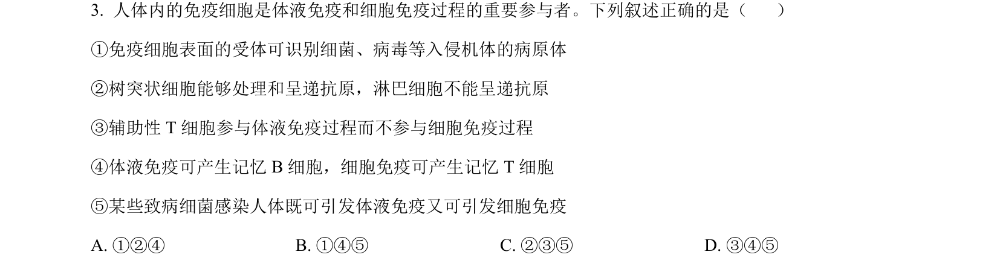
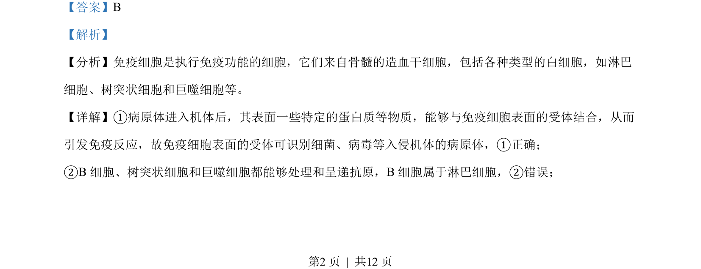
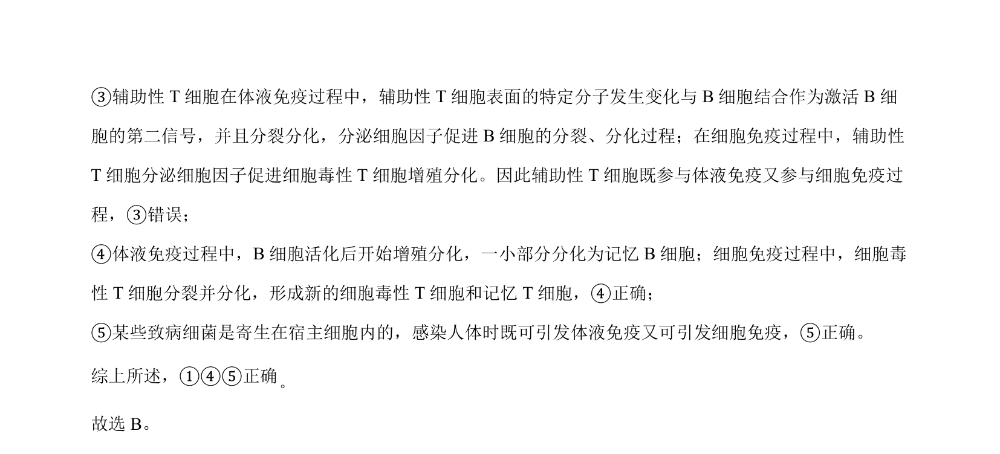

考点：免疫细胞 体液免疫 细胞免疫 抗原呈递

本题考察免疫细胞在体液免疫和细胞免疫中的作用，判断相关叙述正误。


📄 原 PDF 第 2 页：
素材/真题/吉林/2008-2024·（吉林）生物高考真题/2023年高考生物试卷（新课标）（解析卷）.pdf
【答案】B 【解析】 【分析】免疫细胞是执行免疫功能的细胞，它们来自骨髓的造血干细胞，包括各种类型的白细胞，如淋巴 细胞、树突状细胞和巨噬细胞等。 【详解】①病原体进入机体后，其表面一些特定的蛋白质等物质，能够与免疫细胞表面的受体结合，从而 引发免疫反应，故免疫细胞表面的受体可识别细菌、病毒等入侵机体的病原体，①正确； ②B细胞、树突状细胞和巨噬细胞都能够处理和呈递抗原，B细胞属于淋巴细胞，②错误；